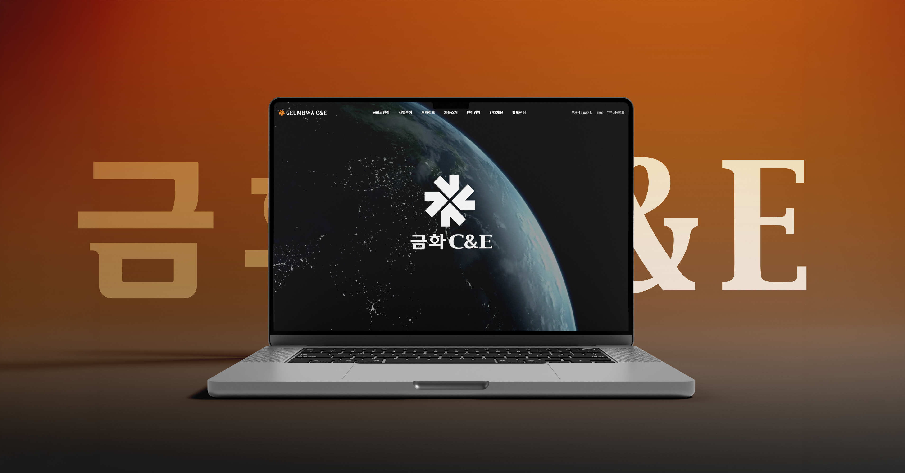

PORTFOLIO
ABOUT
ABOUT
Portfolio
Portfolio
UX/UI
편집
© 2026 EUNSUN .ALL RIGHTS RESERVED

Overview
금화C&E 홈페이지
2000년도 초에 만들어진 (주)금화C&E의 초창기 홈페이지 전체 리뉴얼 프로젝트 입니다.
기존의 사용자 UI가 고려되지 않은 불편한 디자인에서 신뢰도와 정확한 정보 전달을 중심적으로 리뉴얼 디자인을 진행했습니다.
일상에 노출되는 홈페이지가 아닌 거래처 위주로 보는 홈페이지기에 가능한 깔끔하고 기업이 원하는 컬러에 맞춰 리뉴얼 됐습니다.
기간
2024. 07 ~ 2024. 10
디자인
100%
퍼블리싱
100%
홈페이지 바로가기